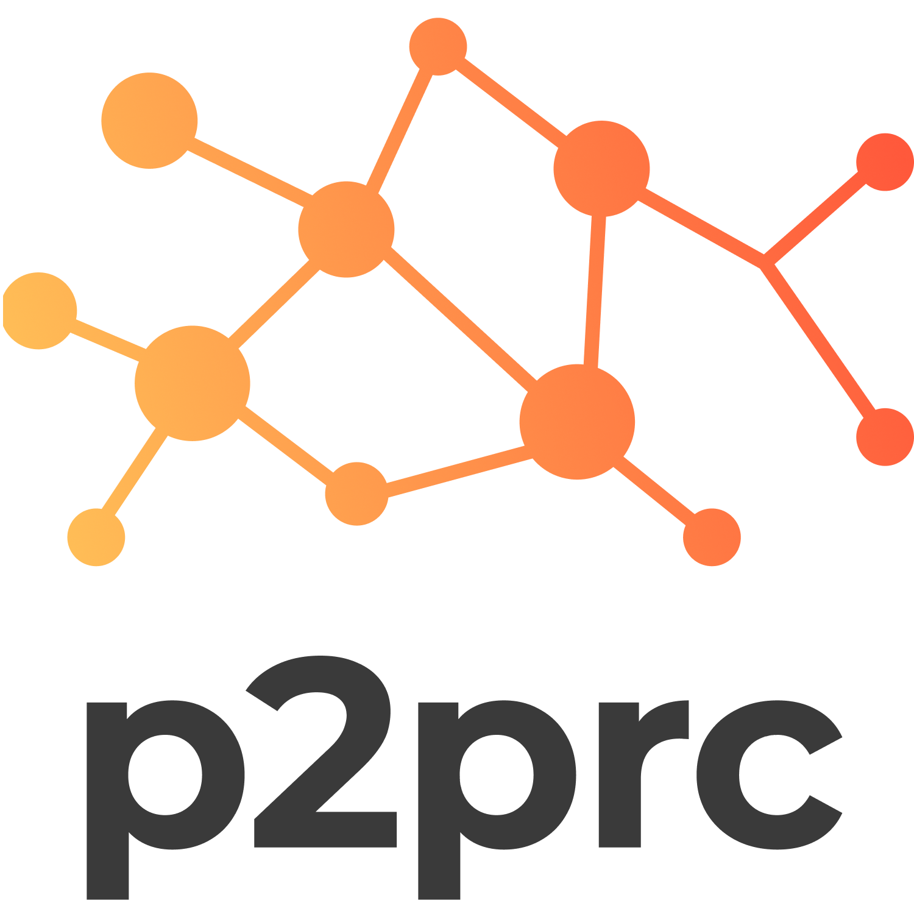
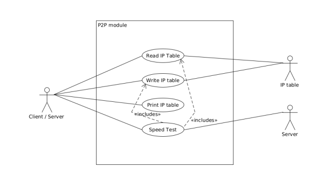
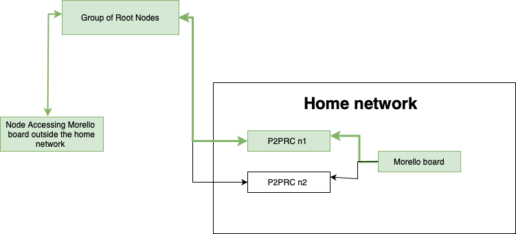

Table of Contents
- 1. Guide through video
- 2. Introduction
- 3. Installation
- 4. Nix Flake
- 5. Using basic commands
-
- 5.0.1. Start as a server
- 5.0.2. View server Specification
- 5.0.3. Run container
- 5.0.4. Remove container
- 5.0.5. Adding servers to ip table
- 5.0.6. Update ip table
- 5.0.7. List Servers
- 5.0.8. View Network interfaces
- 5.0.9. Viewing Containers created Client side
- 5.0.10. Running plugin
- 5.0.11. Create group
- 5.0.12. Add container to group
- 5.0.13. View groups
- 5.0.14. View specific group
- 5.0.15. Delete container from group
- 5.0.16. Delete entire group
- 5.0.17. Pulling plugin from a remote repo
- 5.0.18. Deleting plugin from the plugin directory
- 5.0.19. Added custom metadata about the current node
- 5.0.20. MapPort and link to domain name
- 5.0.21. Add root node
-
- 6. P2P Module Implementation
- 7. Language Bindings
- 8. Config Implementation
- 9. Abstractions
- 10. NAT Traversal
- 11. Client mode
- 12. Simulation
- 13. Blog posts
- 14. Ideas for future potencial features

1. Guide through video
1.0.1. The video below shows the setup and usage of P2PRC.

1.0.2. Source code: https://github.com/Akilan1999/p2p-rendering-computation
2. Introduction
This project focuses on creating a framework for running heavy computational tasks that a regular computer cannot handle easily. These tasks may include graphically demanding video games, rendering 3D animations, and performing complex protein folding simulations. The major focus of this project is not on financial incentives but rather on building a robust and efficient peer-to-peer (P2P) network to decentralise task execution and increase the computational bandwidth available for such tasks.
The P2PRC framework serves as a foundation for decentralised rendering and computation, providing insights into how tasks can be distributed efficiently across a network of peers. Leveraging the P2PRC approach, this project extends its capabilities to handle a wider range of computationally intensive tasks.
2.1. Motivation
Many of the users rely on our PC / Laptop or servers that belong to a server farm to run heavy tasks and with the demand of high creativity requires higher computing power. Buying a powerful computer every few years to run a bunch of heavy tasks which are not executed as frequently to reap the benefits can be inefficient utilization of hardware. On the other end, renting servers to run these heavy tasks can be really useful. Ethically speaking this is leading to monopolisation of computing power similar to what is happening in the web server area. By using peer to peer principles it is possible to remove the monopolisation factor and increase the bandwidth between the client and server.
3. Installation
Over here we will cover the basic steps to get the server and client side running.
3.1. Latest release install
3.2. Install from Github master branch
3.2.1. Install Go lang
The entire the implementation of this project is done using Go lang. Thus, we need go lang to compile to code to a binary file. Instructions to install Go lang
3.2.2. Install Docker
In this project the choice of virtualization is Docker due to it's wide usage in the developer community. In the server module we use the Docker Go API to create and interact with the containers.
Instructions to install docker
Instructions to install docker GPU
// Do ensure that the docker command does not need sudo to run sudo chmod 666 /var/run/docker.sock
3.2.3. Build Project and install project
To set up the internal dependencies and build the entire go code into a single binary
make
3.2.4. Add appropriate paths to .bashrc
export P2PRC=/<PATH>/p2p-rendering-computation
export PATH=/<PATH>/p2p-rendering-computation:${PATH}
3.2.5. Test if binary works
p2prc --help
- Output:
NAME: p2p-rendering-computation - p2p cli application to create and access VMs in other servers USAGE: p2prc [global options] command [command options] [arguments...] VERSION: 2.0.0 COMMANDS: help, h Shows a list of commands or help for one command GLOBAL OPTIONS: --Server, -s Starts server (default: false) [$SERVER] --UpdateServerList, --us Update List of Server available based on servers iptables (default: false) [$UPDATE_SERVER_LIST] --ListServers, --ls List servers which can render tasks (default: false) [$LIST_SERVERS] --AddServer value, --as value Adds server IP address to iptables [$ADD_SERVER] --ViewImages value, --vi value View images available on the server IP address [$VIEW_IMAGES] --CreateVM value, --touch value Creates Docker container on the selected server [$CREATE_VM] --ContainerName value, --cn value Specifying the container run on the server side [$CONTAINER_NAME] --BaseImage value, --bi value Specifying the docker base image to template the dockerfile [$CONTAINER_NAME] --RemoveVM value, --rm value Stop and Remove Docker container (IP:port) accompanied by container ID via --ID or --id [$REMOVE_VM] --ID value, --id value Docker Container ID [$ID] --Ports value, -p value Number of ports to open for the Docker Container [$NUM_PORTS] --GPU, --gpu Create Docker Containers to access GPU (default: false) [$USE_GPU] --Specification value, --specs value Specs of the server node [$SPECS] --SetDefaultConfig, --dc Sets a default configuration file (default: false) [$SET_DEFAULT_CONFIG] --NetworkInterfaces, --ni Shows the network interface in your computer (default: false) [$NETWORK_INTERFACE] --ViewPlugins, --vp Shows plugins available to be executed (default: false) [$VIEW_PLUGIN] --TrackedContainers, --tc View (currently running) containers which have been created from the client side (default: false) [$TRACKED_CONTAINERS] --ExecutePlugin value, --plugin value Plugin which needs to be executed [$EXECUTE_PLUGIN] --CreateGroup, --cgroup Creates a new group (default: false) [$CREATE_GROUP] --Group value, --group value group flag with argument group ID [$GROUP] --Groups, --groups View all groups (default: false) [$GROUPS] --RemoveContainerGroup, --rmcgroup Remove specific container in the group (default: false) [$REMOVE_CONTAINER_GROUP] --RemoveGroup value, --rmgroup value Removes the entire group [$REMOVE_GROUP] --MAPPort value, --mp value Maps port for a specific port provided as the parameter [$MAPPORT] --DomainName value, --dn value While mapping ports allows to set a domain name to create a mapping in the proxy server [$DOMAINNAME] --Generate value, --gen value Generates a new copy of P2PRC which can be modified based on your needs [$GENERATE] --ModuleName value, --mod value New go project module name [$MODULENAME] --PullPlugin value, --pp value Pulls plugin from git repos [$PULLPLUGIN] --RemovePlugin value, --rp value Removes plugin [$REMOVEPLUGIN] --AddMetaData value, --amd value Adds metadata about the current node in the p2p network which is then propagated through the network [$ADDMETADATA] --help, -h show help (default: false) --version, -v print the version (default: false)
4. Nix Flake
Nix is a growing ecosystem that allows flexibility on how you develop, build and package software and configurations. It brings all programming languages (and all other tooling) to an equal footing, despite deep design differences. More importantly, integrates all the "packaging" into the context of a "pure" function.
P2PRC aims to become a utility that can be used in various flexible manners and having Nix support is a good alternative to accomplish this goal.
Nix Flake is a format, within the Nix ecosystem, intentionally designed to encourage a standard in packaging distribution. The current packaging assumes that you have "nix flake" installed because it is currently an experimental feature of Nix.
4.1. P2PRC core Go language repo
In case you want to develop, build or integrate using nix, you just need to run either "nix develop" or "nix run" from the command line locally in a cloned git repository or by running "nix run github:akilan1999/p2p-rendering-computation – –help"
P2PRC library also is ready to be imported into other nix flakes. To accomplish that please make sure to override the target nixpkgs environment in the following manner;
pkgs = import nixpkgs {
inherit system;
overlays = [
p2prc-flake.overlays.default
];
};
This will make the p2prc executable available in the environment of any application you use.
4.2. P2PRC Haskell library
4.2.1. Nix:
The project is structured to provide language bindings to any programming language. The first one being supported in this manner is the Haskell programming language. It provides a bootstrapping script for a new Cabal project with p2prc binary available in the environment and, more relevantly, the Haskell library bindings available in the virtual environment cabal environment.
nix run git+https://github.com/akilan1999/p2p-rendering-computation#initHaskellProject -- <PROJECT_NAME>
This will generate a new haskell project setup to automatically work with the p2prc development and running environment.
Once completed, you should go into the project directory and copy the nix flake template, necessary to define the project's environment.
nix flake init -t github:akilan1999/p2p-rendering-computation#haskell
The previous command sets up the flake environment and its dependencies. It will look like the following
{
description = "Start of Haskell P2PRC flake";
inputs =
{
nixpkgs.url = "github:NixOS/nixpkgs/nixos-unstable";
flake-util.url = "github:numtide/flake-utils";
p2prc-flake.url = "github:akilan1999/p2p-rendering-computation";
};
outputs = { nixpkgs, p2prc-flake, flake-utils, ... }:
(flake-utils.lib.eachDefaultSystem (system:
let
pkgs = import nixpkgs {
inherit system;
overlays = [
p2prc-flake.overlays.default
p2prc-flake.overlays.bindings
];
};
in {
packages.default = pkgs.haskellPackages.callPackage ./cabal.nix { };
devShells.default = pkgs.haskellPackages.shellFor {
packages = p: [
(p.callPackage ./cabal.nix { })
];
buildInputs = with pkgs; [
p2prc-flake.packages.${system}.default
ghc
cabal2nix
cabal-install
];
shellHook = ''
cabal2nix . > ./cabal.nix
'';
};
}
));
}
The template uses Cabal2Nix which manages the Haskell virtual environment automatically. It applies the system overlays, sets up the shell environment for the project (updating the Cabal2Nix configuration) and packages the main executable.
5. Using basic commands
5.0.1. Start as a server
p2prc -s
5.0.2. View server Specification
p2prc --specs=<ip address>
5.0.3. Run container
use the --gpu if you know the other machine has a gpu.
p2prc --touch=<server ip address> -p <number of ports> --gpu
5.0.4. Remove container
The docker id is present in the output where you create a container
p2prc --rm=<server ip address> --id=<docker container id>
5.0.5. Adding servers to ip table
p2prc --as=<server ip address you want to add>
5.0.6. Update ip table
p2prc --us
5.0.7. List Servers
p2prc --ls
5.0.8. View Network interfaces
p2prc --ni
5.0.9. Viewing Containers created Client side
p2prc --tc
5.0.10. Running plugin
p2prc --plugin <plugin name> --id <container id or group id>
5.0.11. Create group
p2prc --cgroup
5.0.12. Add container to group
p2prc --group <group id> --id <container id>
5.0.13. View groups
p2prc --groups
5.0.14. View specific group
p2prc --group <group id>
5.0.15. Delete container from group
p2prc --rmcgroup --group <group id> --id <container id>
5.0.16. Delete entire group
p2prc --rmgroup <group id>
5.0.17. Pulling plugin from a remote repo
p2prc --pp <repo link>
5.0.18. Deleting plugin from the plugin directory
p2prc --rp <plugin name>
5.0.19. Added custom metadata about the current node
p2prc --amd "custom metadata"
5.0.20. MapPort and link to domain name
Allows to expose remote ports from a machine in the P2P network.
p2prc --mp <port no to map> --dn <domain name to link Mapped port against>
5.0.21. Add root node
Adds a root node to P2RRC and overwrites all other nodes in the ip table. To be only added before the network is started and with the intention of a fresh instance.
p2prc --arn --ip <root node ip address> -p <root node port no>
6. P2P Module Implementation
The P2P module is for managing server information within the network. It maintains and updates the IP table, ensuring accuracy by preventing duplicates and removing entries for unreachable servers. Furthermore, the module conducts speed tests on the listed servers to determine upload and download speeds. This valuable information enables users to identify nearby servers with optimal performance, enhancing their overall network experience.
[[]
The peer to peer implementation was built from scratch. This is because other peer to peer libraries were on the implementation of the Distributed hash table. At the current moment all those heavy features are not needed because the objective is to search and list all possible servers available. The limitation being that to be a part of the network the user has to know at least 1 server. The advantage of building from scratch makes the module super light and possibility for custom functions and structs. The sub topics below will mention the implementations of each functionality in depth.
6.1. IP Table
The ip table file is a json as the format with a list of servers ip addresses, latencies, downloads and uploads speeds. The functions implemented include read file, write file and remove duplicate IP addresses. The remove duplicate IP address function exists because sometimes servers IP tables can have the same ip addresses as what the client has. The path of the IP table json file is received from the configuration module.
{
"ip_address": [
{
"Name": "<hostname of the machine>",
"MachineUsername": "<machine username>",
"IPV4": "<ipv4 address>",
"IPV6": "<ipv6 address (Not used)>",
"Latency": <latency to the server>,
"Download": <download speed (Not used)>,
"Upload": <upload speed (Not used)>,
"ServerPort": "<server port no>",
"BareMetalSSHPort": "<Baremetal ssh port no>",
"NAT": "<boolean representing if the node is behind NAT or not>",
"EscapeImplementation": "<NAT traversal implementation>",
"ProxyServer": "<If the node listed is acting as a proxy server>",
"UnSafeMode": <Unsafe mode if turned on will allow all nodes in the network public keys to be
added to that particular node>",
"PublicKey": "<Public key of that particular node>",
"CustomInformation": "<custom information passed in through all the nodes in the network>"
}
]
}
6.1.1. Latency
The latency is measured in milliseconds. The route /serverinfo is called from the server and time it takes to provide a json response is recorded.
6.2. NAT Traversal
P2PRC currently supports TURN for NAT traversal.
6.3. TURN
The current TURN implementation used is FRP. The TURN server is also
required when a P2PRC node is acting as a Server. The TURN server is
determined based on the Node with the least amount of latency based on
the Nodes available on the IPTable. Once a TURN server is determined
there are 2 actions performed. The first one is /FRPPort to the TURN
server to receive a port which is used to generate the external port
from the TURN server. The flow below describes the workflow.
6.3.1. Client mode
- Call
/FRPPort
http://<turn server ip>:<server port no>/FRPport
- Call the TURN server in the following manner. The following is a sample code snippet below.
import (
"github.com/Akilan1999/p2p-rendering-computation/p2p/frp"
)
func main() {
serverPort, err := frp.GetFRPServerPort("http://" + <lowestLatencyIpAddress.Ipv4> + ":" + lowestLatencyIpAddress.ServerPort)
if err != nil {
return nil, err
}
// Create 1 second delay to allow FRP server to start
time.Sleep(1 * time.Second)
// Starts FRP as a client with
proxyPort, err := frp.StartFRPClientForServer(<lowestLatencyIpAddress.Ipv4>, serverPort, <the port you want to expose externally>)
if err != nil {
return nil, err
}
}
7. Language Bindings
Language bindings
refers to wrappers to bridge 2 programming languages. This is used in
P2PRC to extend calling P2PRC functions in other programming languages.
Currently this is done by generating .so and .h from the Go
compiler.
7.2. Workings under the hood
Below are a sample set of commands to open the bindings implementation.
# run cd Bindings/ # list files ls # search for file Client.go
7.2.1. In Client go
There a few things to notice which are different from your standard Go programs:
- 1. We import "C" which means Cgo is required.
import "C"
- 2. All functions which are required to be called from other programming languages have comment such as.
//export <function name> // ------------ Example ---------------- // The function below allows to externally // to call the P2PRC function to start containers // in a specific node in the know list of nodes // in the p2p network. // Note: the comment "//export StartContainer". //export StartContainer func StartContainer(IP string) (output *C.char) { container, err := client.StartContainer(IP, 0, false, "", "") if err != nil { return C.CString(err.Error()) } return ConvertStructToJSONString(container) } - 3. While looking through the file (If 2 files are compared it is pretty trivial to notice a common structure).
// --------- Example ------------ //export StartContainer func StartContainer(IP string) (output *C.char) { container, err := client.StartContainer(IP, 0, false, "", "") if err != nil { return C.CString(err.Error()) } return ConvertStructToJSONString(container) } //export ViewPlugin func ViewPlugin() (output *C.char) { plugins, err := plugin.DetectPlugins() if err != nil { return C.CString(err.Error()) } return ConvertStructToJSONString(plugins) } - It is easy to notice that:
ConvertStructToJSONString(<go object>): This is a helper function that convert a go object to JSON string initially and converts it toCString.(output *C.char): This is the return type for most of the functions.
- A Pseudo code to refer to the common function implementation shape could be represented as:
func <Function name> (output *C.char) { <response>,<error> := <P2PRC function name>(<parameters if needed>) if <error> != nil { return C.CString(<error>.Error()) } return ConvertStructToJSONString(<response>) }
7.3. Current languages supported
7.3.1. Python
- Build sample python program
The easier way
# Run make python # Expected ouput Output is in the Directory Bindings/python/export/ # Run cd Bindings/python/export/ # list files ls # Expected output SharedObjects/ library.py requirements.txt
Above shows a generated folder which consists of a folder called "SharedObjects/" which consists of
p2prc.soandp2prc.hfiles.p2prc.pyrefers to a sample python script calling P2PRC go functions. To start an any project to extend P2PRC with python, This generated folder can copied and created as a new git repo for P2PRC extensions scripted or used a reference point as proof of concept that P2PRC can be called from other programming languages.
7.3.2. Haskell
P2PRC officially supports Haskell bindings and will further support project using Haskell to build orchestrators on top of P2PRC.
- Local machine without Nix
On the local machine we just create a folder as exports which copies the p2prc haskell bindings and the latest build of the p2prc binary. After the binary is copied it runs the –dc in p2prc to setup the basic p2prc configurations. To do the following just do:
make haskell
- Directory to enter into
cd Bindings/Haskell/exports
- Run
- cabal build - cabal run
7.4. Building P2PRC modules in Rust
This refers to building parts of p2prc internal implementation in Rust. As it stands Rust has great C FFI bindings to Go. This decision aligns with our future plans to have the bare basic functionality in Golang and to write future enhanced features in Rust.
7.4.1. A simple Hello Rust module
You can find the source code in rustlibrary/p2prc_rust_module.
We will reproduce this step by step to make it easier for you
to build your own p2prc rust module.
We will be using the Rust library rust2go
as there is a fantastic write up on the inner workings
of the library, which can be found here. The sample Rust
module below is based on the following tutorial.
- Create a Cargo project
cargo new <project name> --bin # Install the cli to convert your automate binding # your Rust to CGo bindings. cargo install --force rust2go-cli
- Add dependencies to the
cargo.tomlfile
[lib] # If you only wanted dynamic library, you'd use only "cdylib". # If you only wanted static library, you'd use only "staticlib". # This demo shows both. See https://doc.rust-lang.org/reference/linkage.html # for more information. crate-type = ["cdylib", "staticlib"] [dependencies] libc = "0.2.2" rust2go = "0.4.1" [build-dependencies] rust2go = { version = "0.4.1", features = ["build"] } - Write a simple Rust program for our test project:
We will create 2 files in the
srcdirectory. We will have the file names with the source code below.lib.rs
Implementation of the trait done manually.
use user::{DemoUser, G2RCall, G2RCallImpl}; mod user; impl G2RCall for G2RCallImpl { fn demo_log(name: String, age: u8) { println!("[Rust Callee] log user {name} and age {age}"); } fn demo_convert_name(user: DemoUser) -> String { let new_user_name = user.name.to_ascii_uppercase(); println!( "[Rust Callee] convert user username: {} -> {new_user_name}", user.name ); new_user_name } }user.rs
Define the request and response structs and calling conventions are in
user.rs. You should also add#[derive(rust2go::R2G)]to your structs and#[rust2go::g2r]to your traits.// Define your own structs. You must derive `rust2go::R2G` for each struct. #[derive(rust2go::R2G, Clone)] pub struct DemoUser { pub name: String, pub age: u8, } // Define your own structs. You must derive `rust2go::R2G` for each struct. #[derive(rust2go::R2G, Clone, Copy)] #[allow(dead_code)] pub struct DemoResponse { pub pass: bool, } #[rust2go::g2r] pub trait G2RCall { fn demo_log(name: String, age: u8); fn demo_convert_name(user: DemoUser) -> String;}
- Generating Go FFI bindings
# Enter your Rust root directory, in our case: cd rustlibrary/p2prc_rust_module # Build the Rust module cargo build --release # Copy loaded .a (https://en.wikipedia.org/wiki/Library_%28computing%29#Static_libraries) file # to root directory of p2prc or your project. In the case here our Rust module is 2 # layers deep from the Go root directory. cp target/release/libp2prc_loaded.a ../../ # enter to the root directory cd ../../ # Generate go program (gen.go) to bind with the .a file rust2go-cli --src rustlibrary/p2prctest/src/user.rs --dst rustlibrary/gen.go --without-main # After this go to the section below on "After the last step..." and "Defining the Go package" # Build with the "rust" tag to allow the rust module to link with the go program. go build -tags rust -o p2prc
- Defining the Go package
In our example, we created a package called
rustlibrary. We will now also create 2 files calledtest_rust.goandtest_not_rust.go.test_rust.gofile consists of the Go program calling the rust implemented functions.//This ensures that only when the rust tag is // produced on build we should then include this // file on compile time. //go:build rust package rustlibrary import "fmt" /* // For statically link: #cgo LDFLAGS: ./librust_lib.a // For dynamically link: #cgo LDFLAGS: -L. -lrust_lib #cgo LDFLAGS: <path of the statically linked file> */ import "C" func TestRust() { // Defined in the gen.go file // This file was auto generated // by rust2go. user := DemoUser{ name: "chihai", age: 28, } // calling rust functions G2RCallImpl{}.demo_log(&user.name, &user.age) newName := G2RCallImpl{}.demo_convert_name(&user) fmt.Printf("new name: %s", newName) }We will create a new file (i.e
test_not_rust.go) with the same function shape. But now allows it to build as the default because therusttag is not provided.//go:build !rust // Package rustlibrary // This is samle package that mentions to the go program that // the rust .a file is not linked to the binary. This is to // always allow p2prc to work with pure go. package rustlibrary import "fmt" func TestRust() { fmt.Println("Rust module not built") }We will now add the call of the test rust module as a p2prc cli command. We will modify these 2 files:
cmd/flag.go
package cmd import ( "github.com/urfave/cli/v2" ) // Variables declared for CLI var ( ... // Test calling rust code // It's a boolean flag // Since we only want // to trigger the // rust function CallRustProgram bool ) ... var AppConfigFlags = []cli.Flag{ ... // Registers the command line flag. &cli.BoolFlag{ Name: "CallRustProgram", Aliases: []string{"crp"}, Usage: "Experimental: Call test Rust program", EnvVars: []string{"CRP"}, Destination: &CallRustProgram, }, }cmd/action.go
package cmd import ( ... // Import test rust module "github.com/Akilan1999/p2p-rendering-computation/rustlibrary" ... ) var CliAction = func(ctx *cli.Context) error { ... // Run the test rust program if CallRustProgram { rustlibrary.TestRust() } ... return nil } ...
7.4.2. Important notes for creates future Rust modules
You can build the test module with the following command:
make install-rust # call the test flag p2prc --CallRustProgram # Response [Rust Callee] log user chihai and age 28 [Rust Callee] convert user username: chihai -> CHIHAI new name: CHIHAI
Ensure that all rust modules imported can be compiled with the
tag rust. An example that should work would be go build -tags rust -o p2prc.
As it stands, we will official only accept modules which are statically compiled
so that everything stays in a single binary.
8. Config Implementation
The configuration module is responsible to store basic information of absolute paths of files being called in the Go code. In a full-fledged Cli the configuration file can be found in the directory etc and from there points to location such as where the IP table file is located. In the future implementation the config file will have information such as number of hops and other parameters to tweak and to improve the effectiveness of the peer to peer network. The configuration module was implemented using the library Viper. The Viper library automates features such as searching in default paths to find out if the configuration file is present. If the configuration file is not present in the default paths then it auto generates the configuration file. The configurations file can be in any format. In this project the configuration file was generated using JSON format.
{
"MachineName": "Akilans-MacBook-Pro.local-975261X",
"IPTable": "/Users/akilan/Documents/p2p-rendering-computation/p2p/iptable/ip_table.json",
"DockerContainers": "/Users/akilan/Documents/p2p-rendering-computation/server/docker/containers/",
"DefaultDockerFile": "/Users/akilan/Documents/p2p-rendering-computation/server/docker/containers/docker-ubuntu-sshd/",
"DockerRunLogs": "/tmp/",
"SpeedTestFile": "/Users/akilan/Documents/p2p-rendering-computation/p2p/50.bin",
"IPV6Address": "",
"PluginPath": "/Users/akilan/Documents/p2p-rendering-computation/plugin/deploy",
"TrackContainersPath": "/Users/akilan/Documents/p2p-rendering-computation/client/trackcontainers/trackcontainers.json",
"ServerPort": "8088",
"ProxyPort": "",
"GroupTrackContainersPath": "/Users/akilan/Documents/p2p-rendering-computation/client/trackcontainers/grouptrackcontainers.json",
"FRPServerPort": true,
"BehindNAT": true,
"IPTableKey": "QH3yQrGRe2X4",
"PublicKeyFile": "/Users/akilan/Documents/p2p-rendering-computation/p2prc.publicKey",
"PrivateKeyFile": "/Users/akilan/Documents/p2p-rendering-computation/p2prc.privateKey",
"PemFile": "/Users/akilan/Documents/p2p-rendering-computation/cert.pem",
"KeyFile": "/Users/akilan/Documents/p2p-rendering-computation/key.pem",
"BareMetal": false,
"UnsafeMode": false,
"Test": false,
"CustomConfig": null
}
9. Abstractions
The Abstractions package consists of black-boxed functions for P2PRC.
9.1. Functions
Init(<Project name>): Initializes P2PRC with all the needed configurations.Start(): Starts p2prc as a server and makes it possible to extend by adding other routes and functionality to P2PRC.MapPort(<port no>): On the local machine the port you want to export to world.StartContainer(<ip address>): The machine on the p2p network where you want to spin up a docker container.RemoveContainer(<ip address>,<container id>): Terminate container based on the IP address and container name.GetSpecs(<ip address>): Get specs of a machine on the network based on the IP address.ViewIPTable(): View the IP table which about nodes in the network.UpdateIPTable(): Force update IP table to learn about new nodes faster.
10. NAT Traversal
P2PRC currently supports TURN for NAT traversal.
10.1. TURN
The current TURN implementation used is FRP. The TURN server is also
required when a P2PRC node is acting as a Server. The TURN server is
determined based on the Node with the least amount of latency based on
the Nodes available on the IPTable. Once a TURN server is determined
there are 2 actions performed. The first one is /FRPPort to the TURN
server to receive a port which is used to generate the external port
from the TURN server. The flow below describes the workflow.
11. Client mode
- Call
/FRPPort
http://<turn server ip>:<server port no>/FRPport
- Call the TURN server in the following manner. The following is a sample code snippet below.
import (
"github.com/Akilan1999/p2p-rendering-computation/p2p/frp"
)
func main() {
serverPort, err := frp.GetFRPServerPort("http://" + <lowestLatencyIpAddress.Ipv4> + ":" + lowestLatencyIpAddress.ServerPort)
if err != nil {
return nil, err
}
// Create 1 second delay to allow FRP server to start
time.Sleep(1 * time.Second)
// Starts FRP as a client with
proxyPort, err := frp.StartFRPClientForServer(<lowestLatencyIpAddress.Ipv4>, serverPort, <the port you want to expose externally>)
if err != nil {
return nil, err
}
}
12. Simulation
The simulation library is a really simple library to locally run serveral instances of P2PRC to test the functionality of sending information through the network and particularly the Node discovery mechanism. There are current 5 commands which can be used as shown below:
12.1. Command
- P2PRC instances "number of instances" : Starts p2prc processes based on the number of number instances provided. This includes creating temporary folders with independent IPTables.
- Start all instances "number of instances": Starts the P2PRC instances created. This function enters into the instance directory and runs ```p2prc -s &``` with a delay for approximately 3 seconds. This allows each independent created node to learn about each other.
- IP Tables after Started number of instances": Prints the IPTable of each independant node.
- Remove all test files: Removes all test files created which needed for testing the generated P2PRC instances.
- Kill all instances: Kills all the background P2PRC instances created.
12.2. Sample bash instructions
# Unset default P2PRC env path unset P2PRC # Run with 2 nodes P2PRC_instances 3 # Start instances Start_all_instances 3 # List ip tables of nodes started IP_Tables_after_Started 3 # Remove test files created Remove_all_test_files # Kill all instances Kill_all_instances
Source code: https://github.com/Akilan1999/p2p-rendering-computation/blob/master/Simulation/simulation.sh
13. Blog posts
13.1. Self host within 5 minutes any program
- Author: Akilan Selvacoumar
- Date: 28-01-2025
- Video tutorial:

This is a fun expirement for anyone to try to quickly run a server and quickly do a map port and domain name mapping in a single command.
13.1.1. 1. Find a program you want to run
Let's try to setup a really easy program (Let's do with Linkwarden with docker compose :) ). This is under the assumption you have docker compose installed on your local machine.
- Let's run Linkwarden using docker compose and P2PRC
mkdir linkwarden && cd linkwarden curl -O https://raw.githubusercontent.com/linkwarden/linkwarden/refs/heads/main/docker-compose.yml curl -L https://raw.githubusercontent.com/linkwarden/linkwarden/refs/heads/main/.env.sample -o ".env"
Environment configuration
vim .env # Change values NEXTAUTH_URL=https://<DOMAIN NAME>/api/v1/auth NEXTAUTH_SECRET=VERY_SENSITIVE_SECRET POSTGRES_PASSWORD=CUSTOM_POSTGRES_PASSWORD
Run linkwarden!
docker compose up
If setup correctly linkwarden should be running. Local link: http://localhost:3000
Time to setup P2PRC Installation Instructions
Run p2prc as a background
p2prc -s &
Run map port and domain mapping
p2prc --mp 3000 --dn <DOMAIN NAME>
Sample response
{ "IPAddress": "217.76.63.222", "PortNo": "61582", "EntireAddress": "217.76.63.222:61582" }Add DNS entry
A entry 217.76.63.222
Your done now just head to the DOMAIN NAME you added. ex: https://linkwarden.akilan.io
14. Ideas for future potencial features
Consists of personal loideas for the future of P2PRC. At moment only has main contributors writiing to this.
14.1. To support hetrogenous set of Nodes that cannot run P2PRC
This stems from a personal issue I have when doing research on CheriBSD kernel. For my research I am using the ARM morello which is a 128bit ARMv8 processor. At the moment Go programs can cannot compile and run inside the CPU. This means I cannot run P2PRC at the moment inside the ARM morello to remotely access it when it's behind NAT using P2PRC. This would indeed be a common problem when running against various Architectures that do not support running P2PRC. As you will see soon this also creates oppurtunity space to scale faster to nodes in a local network and would introduce a new layer fault tolerance within a local network nodes.
14.1.1. Assumptions:
- I have a Morello board that cannot run P2PRC
- The Morello has a local IP address (ex: 192.168.0.10)
- I have 2 laptops running P2PRC in that local network.
- This means I have 2 ways to access the Morello board: Which is to SSH into either 2 laptops and then SSH into 192.168.0.10 to gain access to the board. Wouldn't it be great to automate this whole layer and as well look into custom tasks into the hetrogenous hardware.
14.1.2. Set of interesting possible:
We build a cool set possibilities before and use this to build up the implementation plan.
- We can use P2PRC access the morello board remotely in a single command.
- We can use the P2PRC protocol to run servers inside the morello board via traversed node locally which can access that Node.
- Spin servers on node not running P2PRC using the P2PRC standard abstractions.
- Auto-setup P2PRC nodes with just SSH access via potencially a DSL.
- A neat use case for CHERI for instance would be use the architecture to run light weight hypervisors.
14.1.3. Implementation
- To use implementations similar to socat to ensure we can bind address of local nodes to a node running P2PRC and the node running P2PRC can do a local map port.
- We are working on hardening the implementation of the –mp (Map port) to even map ports to machines which remotely running P2PRC. This means of instance I can issue a command to the Morello board without the morello board being in my local network.
- We would want to implement the exsisting P2PRC public key mechanism as well so that other nodes can access the Morello board who have permission access.

Figure 1: Implementation idea (To be improved upon)